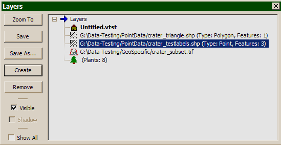

Abstract Layers in the VTP software means any kind of raw geometry data (points, lines, polylines, polygons) which do not represent a real-world object. For example, waypoints, political boundaries, property areas, GPS tracks. These are the kind of features traditionally handled by GIS software. Abstract Layers can be loaded and saved to SHP files (ESRI Shapefile format, often with an accompanying DBF file). You can have any number of abstract layers on each terrain.
To include structures from a SHP file, edit the properties for your terrain. Under the Abstract Layers tab, double-click to choose from a list of all the SHP files that are located in PointData folders on your data path. (The directory is called PointData because VTP used to only support points, but you can in fact put any kind of SHP dataset there.)
Each layer can be displayed with its own Style, which you set with the Style Dialog.
You can also create a new, empty Abstract Layer at runtime, containing labeled point features, by pressing Create in the Layer Dialog. The Style Dialog will appear. You can also do this by using the Create Points mode (menu Tools: Points, or the pushpin on the toolbar) which will create an Abstract Point Layer for you if none exists.

Abstract layers are shown in the Layers Dialog above. You can do these operations on an abstract layer:
- Zoom To: Move the camera so that the selected layer in view.
- Save: Write the active layer to the SHP file which it was loaded from.
- Save As: Write the active layer to a SHP file with another name.
- Create: Create a new, empty point feature layer.
- Remove: Remove a selected layer.
- Visible: Toggle whether the selected layer is visible.